OVERVIEW
The goal of this AI Mock Interview app offers job interview training for job seekers, which guides users to build confidence around their talent. With this tool, users can practice how to structure better answers to a representative before real in-person interviews but rethink their interview skills from the advice from an AI tutor.
I came with the idea of how a digital tool can be very "warm-heart" and helps people who have self-motivation to build their skills. By collecting users' feedback, the app can customize the training courses based on their needs. The project is also inspired by an AI Friends app, Replika, which allows people to track their mental health through the interaction with a chatbot conversation.
OBJECTIVE
Emotional design, machine learning chatbots, minimum viable product(MVP)
ITEM
Graduate project
TOOLS
Google Docs, UserTesting
PRESENTATION
Design proposal, Research carousel, Final slides
PERIOD
Sep 2020 - Dec 2020
DESIGN PROCESS
I decided to follow the design process, which was supported by emotion research and user feedback.
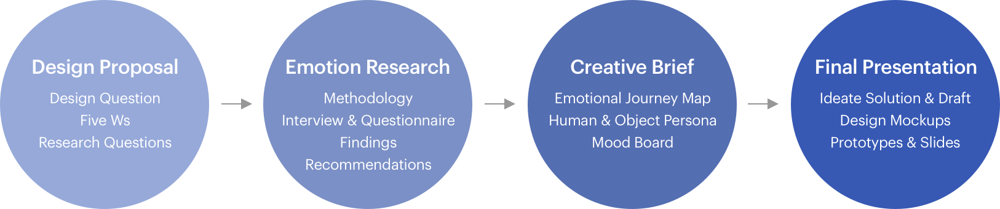DESIGN PROPOSAL
AI Mock Interview App
- Project Tagline: Always here to help and support. Join to mock interviews with your AI tutors now!
- Target Users: Job seekers who want to improve their interview skills.
- Project Description: AI tutors offer customized and focused interview training to job seekers who need to build confidence around their talent. Practice consisting of a conversation between a job applicant and an AI representative. Provide hands-on and results-driven training to build your professional careers.
Design Question
I provided the Five Ws questions(Who, What, When, Where, Why) as below to gather information and problems that I intend to solve in this project. For example: with "Who" questions, I listed the potential users who might be involved in the app. The Five Ws questions also help me to develop my thoughts into the next step, research questions.
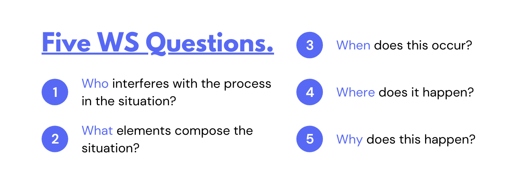- Who interferes with the process in the situation?
- Users: job seekers and recruiters.
- Stakeholders: job seekers and companies.
- Clients: job seekers.
- Team: professionals in various industries.
- What element compose the situation?
- Actions: get training before a real interview.
- Behaviors: release nervous feelings by mock interview practices.
- Elements: tangible user interfaces, voice user interfaces, AR.
- Tools: smartphones or computers.
- When does this occur?
- Past: learn the strategies based on experts’ experiences and advice.
- Present: participate in the mock interviews.
- Future: fulfill careers and provide feedback after real interviews.
- Where does it happen?
- Geographically: a quiet room or any appropriate place.
- Culturally: customize to various cultures of companies or industries.
- Socially: hiring season, workplace.
- Why does this happen?
- Causes: guide job seekers with fewer experiences and weak strategies.
- Constraints: have no standard to follow for the right answers.
- Needs: built confidence through practicing and planning.
- Motivations: upgrade job seekers’ own values to raise competitiveness.
Research Questions
I intended to find out the following questions. How might we create a safe place to develop interview skills? Or how might we help people new to the job market feel less stressed about interviews? How might we coach job seekers to present their best selves? Thus, I separated the research questions and scope into three key steps:
- Set up object: What effect does daily use of AI chatbots have on the emotional feelings of users?
- Refine learning process: What are the most effective communication strategies to boost competitiveness for job interviews?
- Impact result: How can users develop their confidence to shape who they are after using AI Mock Interview?
EMOTION RESEARCH
Objective
Based on my research questions, I decided to talk with people who are going through interviews and also people who are interacting with chatbots in more extended ways.
- Understand target users’ emotional reactions: before interviews, during interviews, after interviews.
- Learn from users’ emotional feelings when they use chatbots tools.
Methodology
I conducted two different approaches to collect research subjects' points of view. I applied qualitative analysis on job seekers and used quantitative analysis to survey people who have talked to chatbots.
- Qualitative analysis: interviews with six participants about and measure their emotional feelings with YouX Emotions.
- Quantitative analysis: conduct the questionnaire with nine participants who have experience interacting with chatbots.
Interview Plan
To understand the experiences of job seekers, I decided to the effective method for qualitative research. The interview helps me explain and explore users' opinions and behaviors. I asked seven open-ended questions to collect in-depth information. Here are my interview questions:
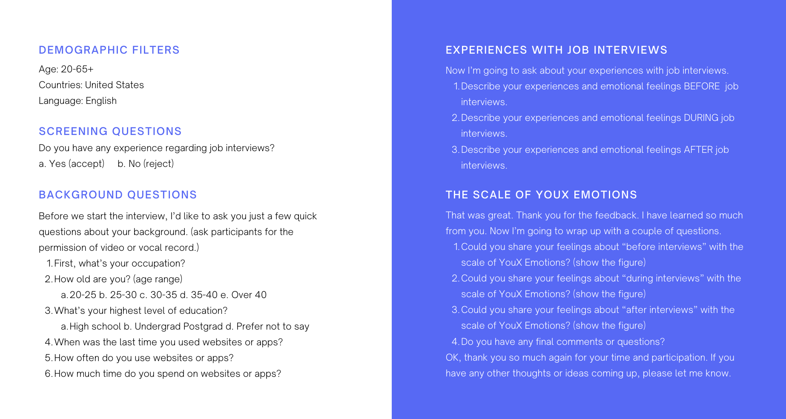Questionnaire Plan
In the questionnaire section, I decided to use open-ended questions to bring up the possible data. A major reason for this is how users can pick up terms flexibly to express their emotional feelings. The participant can also describe their experiences with chatbots without restricted answers. In that case, the results rather than be coded by computers. The outcomes of the survey are classified according to users' issues through manual categorization. Here are my questionnaire questions:
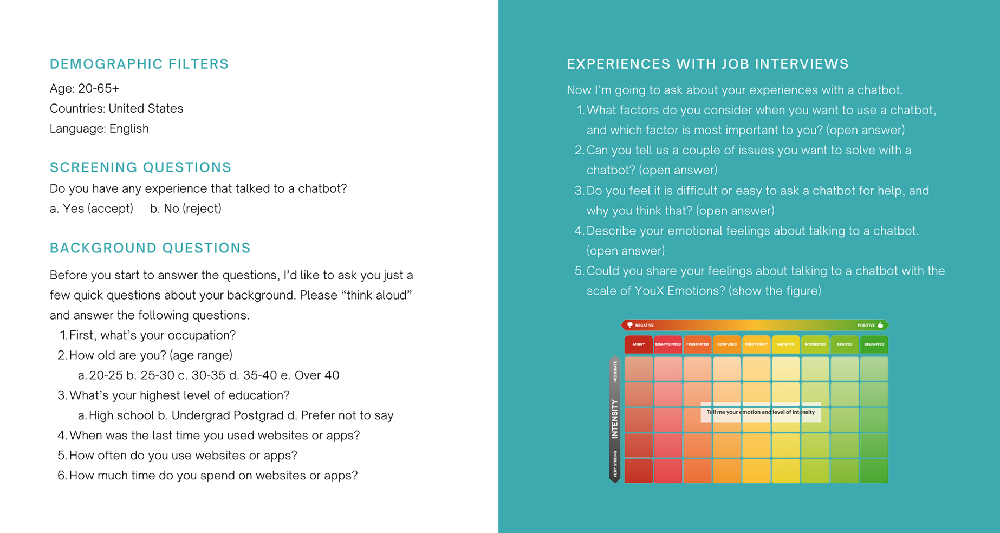Findings & Recommendations
Interview on job interviews
The typical stereotypes regarding emotion do exist in this interview.
- Gender stereotype: three male participants had delighted, excited feeling and feel confident about job interview experiences. A female said her nervous feelings decline after gaining more experiences. Two female participants had negative emotions. The feelings came from how the interview representative treated them.
- Age stereotype: young professionals whose age under 25 mentioned that their interview experiences of internships. Overall, they had a positive reaction and felt strong-delighted, excited, and interested.
- Cultural stereotype: there is one participant who worked in the transportation industry and expressed extremely angry, disappointed, and frustrated about her experiences.
Questionnaire on chatbots
- Finding 1: chatbots are harder to recognize keywords and identify users' questions.
- Recommendation: allowed users some flexibility in choosing the types of questions or guide the user through the linear flow.
- Finding 2: two participants pointed out that chatbots are less anthropomorphized.
- Recommendation: refer to the four primary tone-of-voice dimensions to design chatbots with consistent tone throughout the conversation.
- Finding 3: two participants mentioned about time-consuming communication.
- Recommendation: provide predetermined links and buttons to save users from typing.
According to the finding of the interview on job interviews, I designed the figure below: to present participants' emotional changes before interviews, during interviews, and after interviews through three various colors. I created six avatars to represent each participant and show their emotions on the scale of YouX emotion.
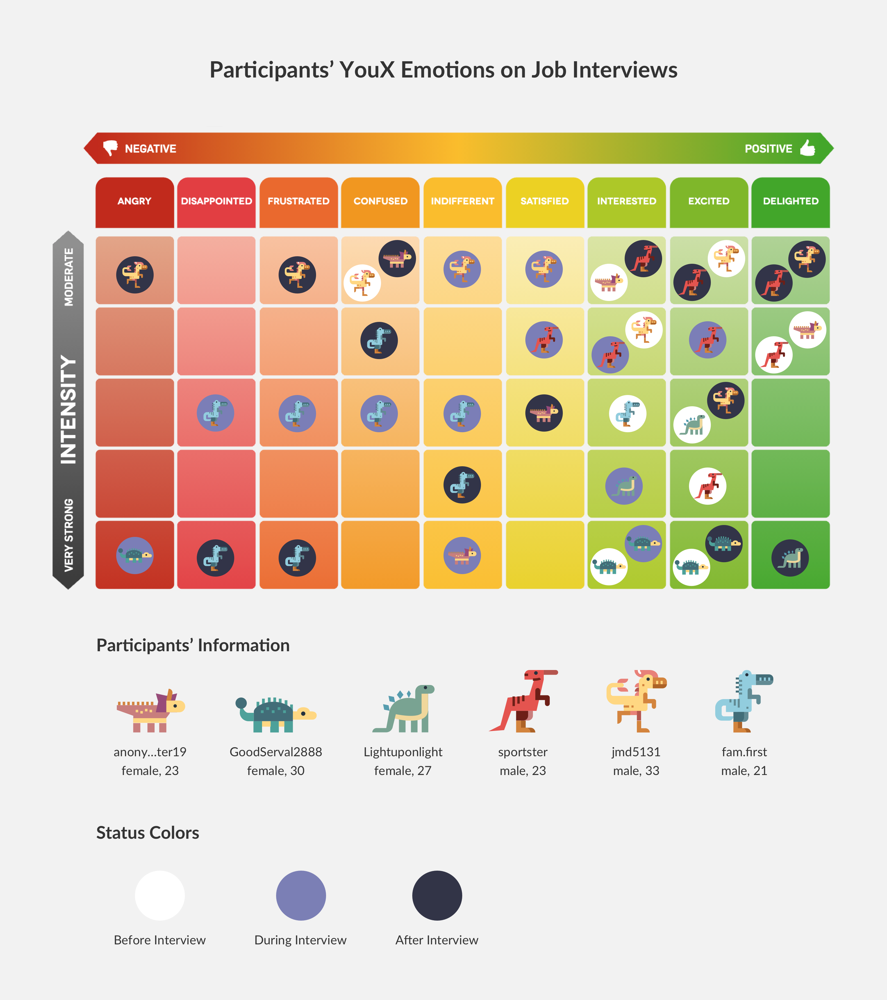Raw Data
After the interviews and Questionnaires, I took notes of participants' video records. Please check the following link to see the research details of the raw data.
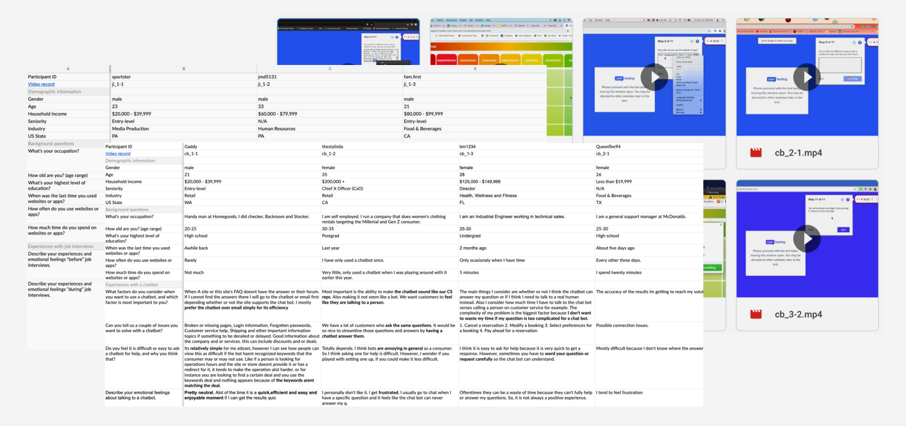Research Conclusion
Due to interview experiences vary from individuals. How to make users have customized mock interviews might be a crucial challenge in this project. Besides, the design needs to follow the UX principles of chatbots. The conversation should guide users through simple linear flows with a limited number of branches that depend on acceptable user answers.
Physical Model
I also created a physical model of insights from my research. The figure presents the data of YouX Emotions. The inspiration refers to the data physicalization from Wikipedia. The discussions interpret how to read and understand the information and the cultural meaning behind the image.
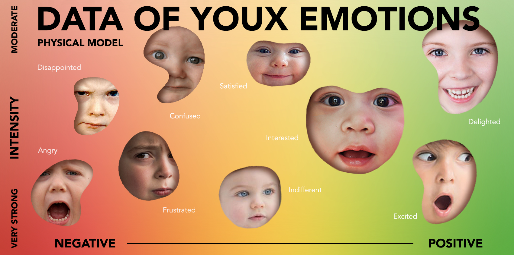- How to read this figure?
- Composition: Based on participants' emotions and their level of intensity.
- Size of Patterns: According to the number of times that be mentioned by participants.
- Why to choose the face of children to represent?
- Make a metaphor for original, true, non-hidden emotional feelings.
- Why to transfer the background into gradient color?
- During the emotion research, most participants described their emotions very ambiguously.
- I also agree that humans' feelings are more complicated.
- The emotion cannot merely classify into a specific category.
Instagram Carousel
According to the emotion research, I created an Instagram Carousel to share and promote my idea with six slides below. This social media presentation introduces the following key points:
- An introduction to my topic and research goals.
- The overall approach: why I choose the methods, who participated, where did I do the research.
- what I did in the qualitative research with examples(photos, materials, etc.)
- What I learned and what I might be a challenge in my project.
- Summary of crucial insights overall.
CREATIVE BRIEF
Emotional Journey Map
Insights: the alteration of the user’s emotion - from negative emotions to positive emotions:
- Feel interested when getting an interview opportunity and start to use the tool.
- Feel frustrated during practicing and training of mock job interviews.
- Feel confused when waiting for the presentation on the real interview day.
- Feel indifferent when entering the real interview environment.
- Feel excited when talking to the interviewer during the interview.
- Feel delighted after completing the job interview.
- Feel satisfied after the interview and gain the job interview experience.
Problem Statement
According to the insights of EJP, divide the phase of the journey into 3 processes:
- Set up an object: before Interviews, users keep learning routines.
- Refine the learning process: users receive reminder tips during interviews.
- Impact results: after interviews, users give feedback reviews.
Human Persona
Audience: create a user persona with a fiction figure who is a job seeker. The user just graduated from school. And she uses this tool to enhance her skills and get a position in a new field.
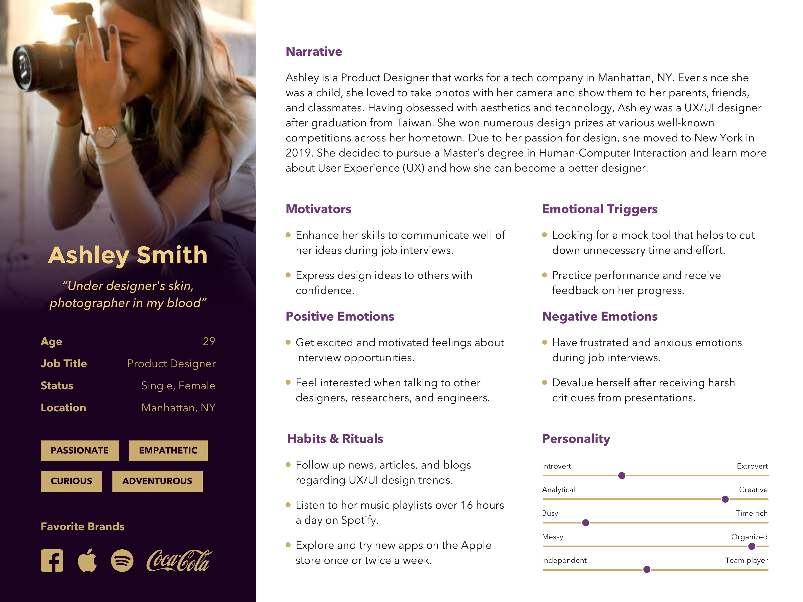Object Persona
Objective: Deliver an AI chatbot as three roles for job seekers below.
- A tutor: guide users to improve their job interview skills.
- An adviser: help users to plan a course schedule of learning routines.
- A friend: encourage users to overcome their negative emotions.
Mood Board
Aesthetic: research the mood board and categorize the images by the features below:
- About the feature page (homepage): provide a various and flexible option.
- How to schedule page: present the schedule plan with a calendar.
- Onboarding page: create serious illustrations regarding the core value of this tool.
- Chatbot page: keep simple user interfaces and restrict chatbot responses.

FINAL PRESENTATION
Ideate Solution
To design, I draw down the initial draft and the site map to ideate my design concept. Then, I jumped into Sketch software to create the high fidelity mockups.
Draft
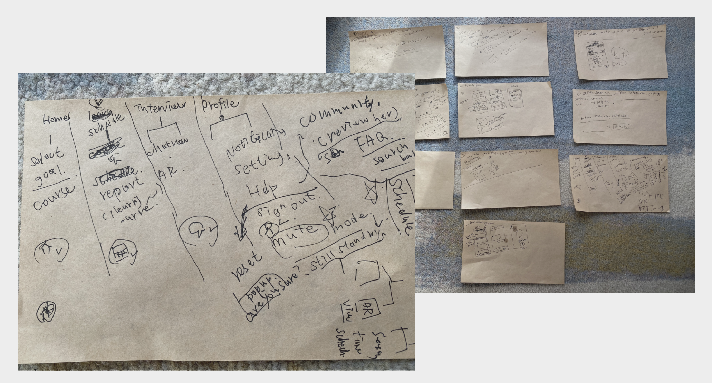Site Map
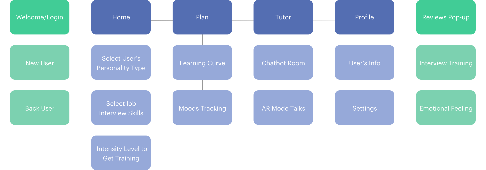Screenshot of Sketch
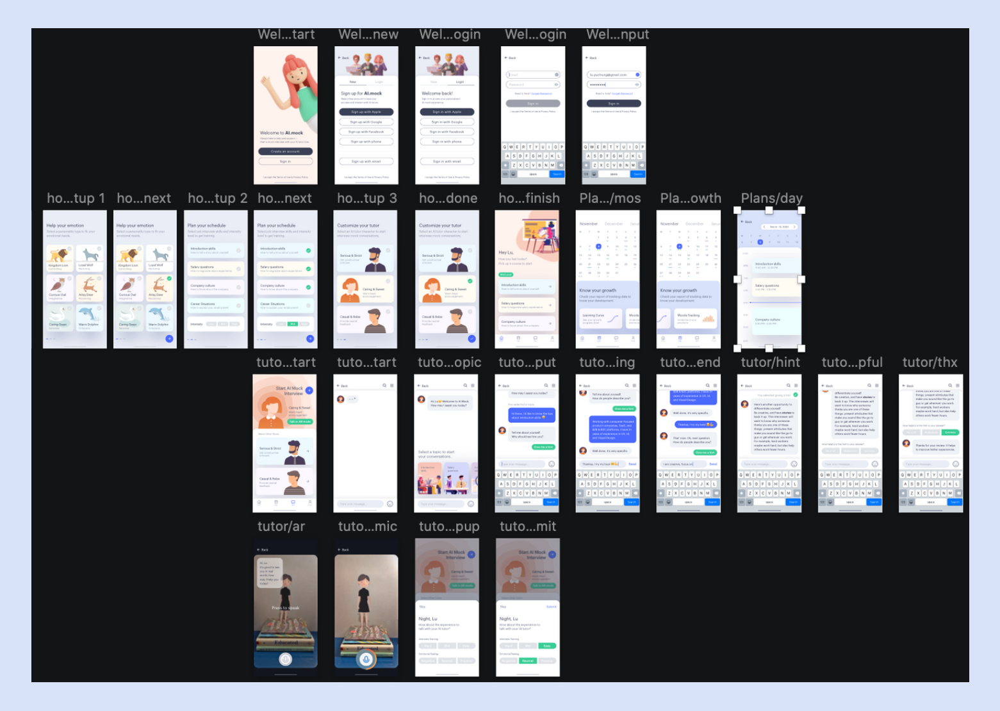Design Mockups
Here are the final design on login process pages and 4 key features:
- Welcome 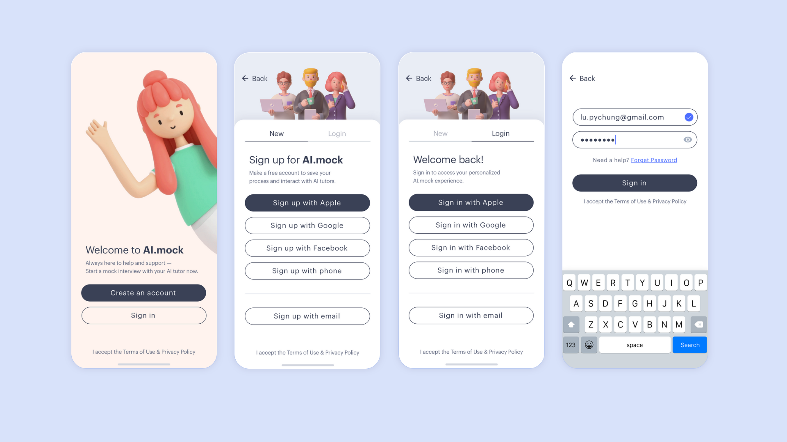
- Home 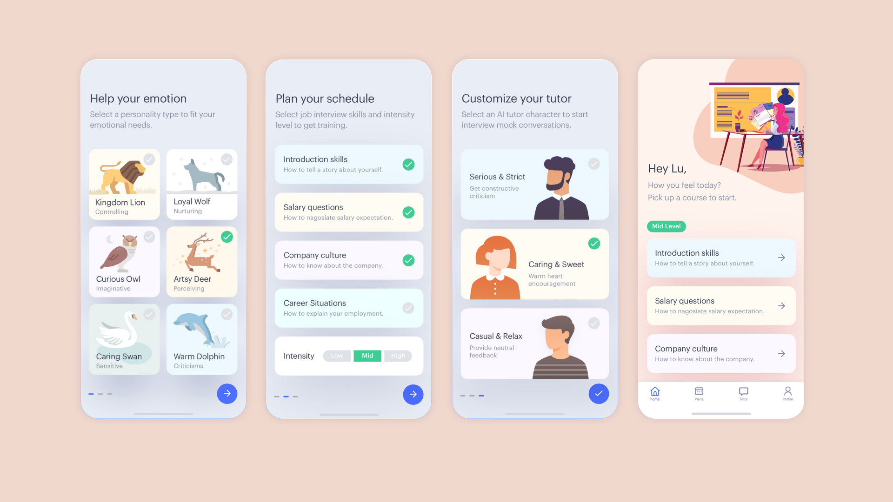
- Plans - Calendar, Learning, Moods 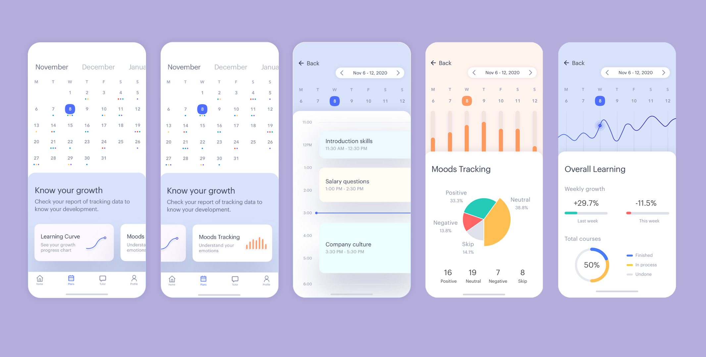
- Tutor - Chatbots 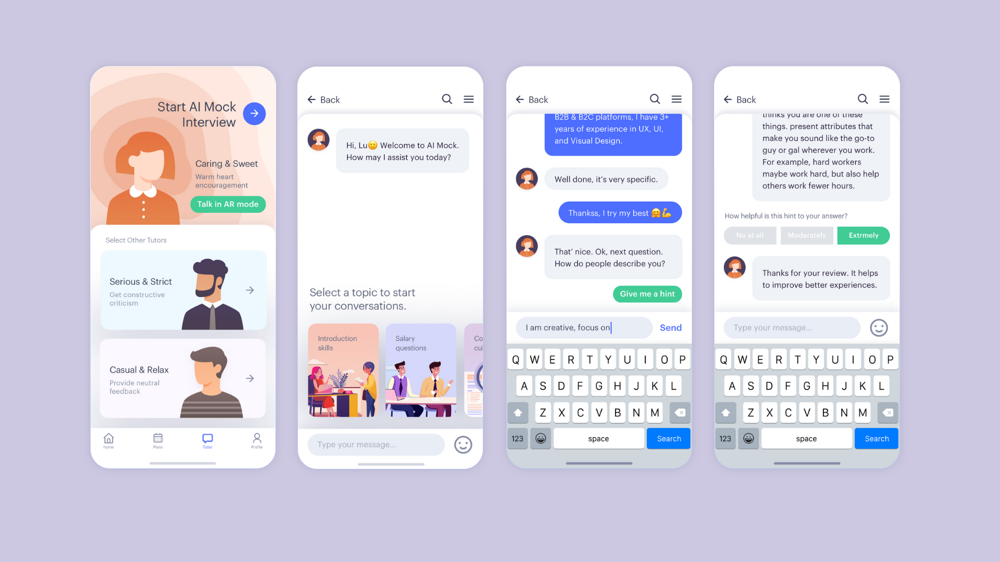
- Tutor - AR, Feedback, Profile 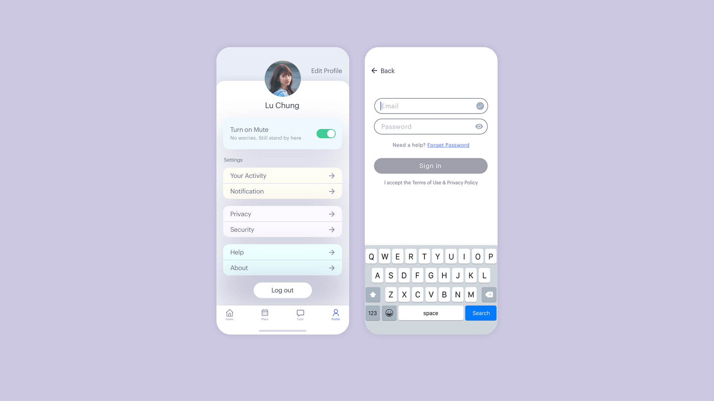
User flows & Prototypes

User flows & Prototypes

User flows & Prototypes

User flows & Prototypes

User flows & Prototypes

Prototypes & Presentation
I uploaded the mockups on the InVision website, and created interactive user flows for the features. Click the buttons below to see the prototypes and the final presentation slides.
PROTOTYPES VIEW SLIDES 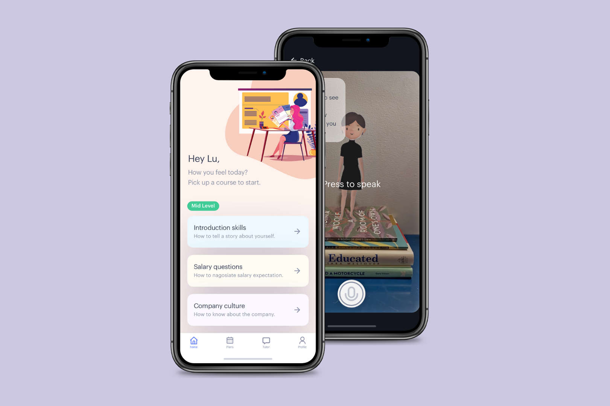Evaluation
I evaluated my project with Eli from Coffee Tech Talks. He gave me feedback regarding my Emotion Research. Also, I did the peer reviews with Yi. He provided suggestions regarding customizing the users’ experiences and future insight.
Future Direction
What will/could be the next steps in the project:
- Visualize the data collected from users.
- Reminder and feedback features.
- Usability testing and iterate the design.
- Create site maps, user flow charts, and lo-fi prototypes.
Reflections
During this project, I felt it's very challenging to make one user interface but provide a "different" experience from other users. I have to take a human as one part of the collected data and see individual users as a "person." Take the interview of emotion research as an example. People who work in different work environments could face a contrary situation during a job interview. Introvert and extrovert personalities might need an opposite way to learn and build their confidence. To address those problems, I design the solution that users can select their character and choose the intensity of the level on the courses.